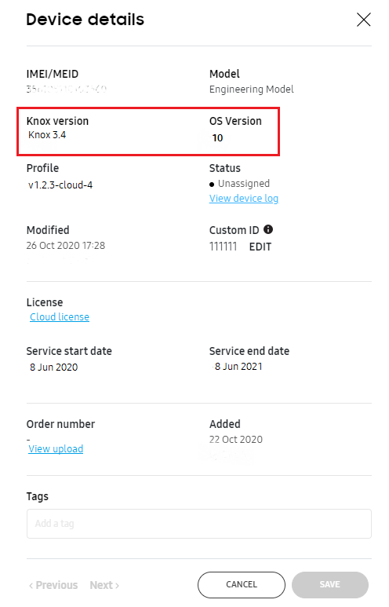

Knox Configure 20.11 release notes
Last updated July 26th, 2023
Enhanced auto-assignment capability
This update allows a reseller to frontload some of the operations typically performed by a KC customer. For example, if a KC customer has the same profile for every device, it does not make much sense for the IT admin to login to the portal just to assign. This step can be eliminated if the reseller can point to the appropriate KC profile at the time of the upload itself.
With this release, a profile alias can be created in the KC console and shared with a reseller, who then attaches the alias to an upload. This, in turn, can be used as a profile auto-assignment rule. Customers don’t always want to share their actual profile names with resellers. With an alias, they can use a more user-friendly name. For example, they can use the alias “Coke-campaign1” instead of the actual profile name, “v1.23_Coke-compaign1-*6712”.
Profile aliases are not shared across resellers, so they do not need to be unique across resellers. However, they do need to be unique for each reseller. Up to 10 profile aliases can be created per reseller, and a profile can be associated with 1 or more aliases. Aliases are optional, but when utilized, need to be associated with an existing profile.
When an additional profile with an alias is added, additional mandatory fields appear: Profile, License and Profile alias. If the license associated with the alias is expired or if its seat count is 0, disable the auto-approval when the profile is assigned. For details, see Assign automatically on upload by reseller.
IT admins that choose to use this feature must ensure that the reseller knows which alias to use per upload. This feature should only be used if they have coordinated with the reseller regarding which profile alias to use. Otherwise, the devices may not be auto-assigned correctly.
Device custom ID support
A custom ID is an ID that you create to map to an IMEI or SN, which are no longer accessible by device apps. Company apps deployed through KC can use it to identify the company approved devices and allow use only for these devices.
For this reason, Knox Configure will allow IT admins to set a custom ID per device.
The custom ID will be used as follows:
- A customer uploads their device IMEI/SN with a custom ID to the KC server.
- When the device is enrolled in KC, the KC server provides the mapped custom ID.
- The KC client stores the provided custom ID using the Knox API provided by the Knox framework.
- The partner app provides the custom ID of the device when the partner app sends a request through the Knox SDK.
Only partner apps deployed through KC can read the custom ID using the Knox API (DeviceInventory.getKnoxServiceId in Knox SDK version 3.7).
When a customer updates their custom ID, they need to ensure it’s also updated in KC. There are two ways to update the custom ID in KC.
- Update the custom ID within the Device Details screen for each ID update
- Update custom IDs using a bulk file upload containing as many custom IDs as needed.
For details on bulk upload see Map devices to Custom IDs in bulk.
Device Knox Version and OS version available in console
This enhancement assists admins to access a device’s Knox version and OS version from within the KC console to better diagnose potential issues.

Beginning with this release, the device Knox version and OS version are available as customizable display options within the KC Devices screen and also displayed for a selected device within the Device details screen. This data is collected during enrollment for new devices. For existing devices, this data is retrieved during next agent update. For more details, see Device details and logs.
On this page
Is this page helpful?